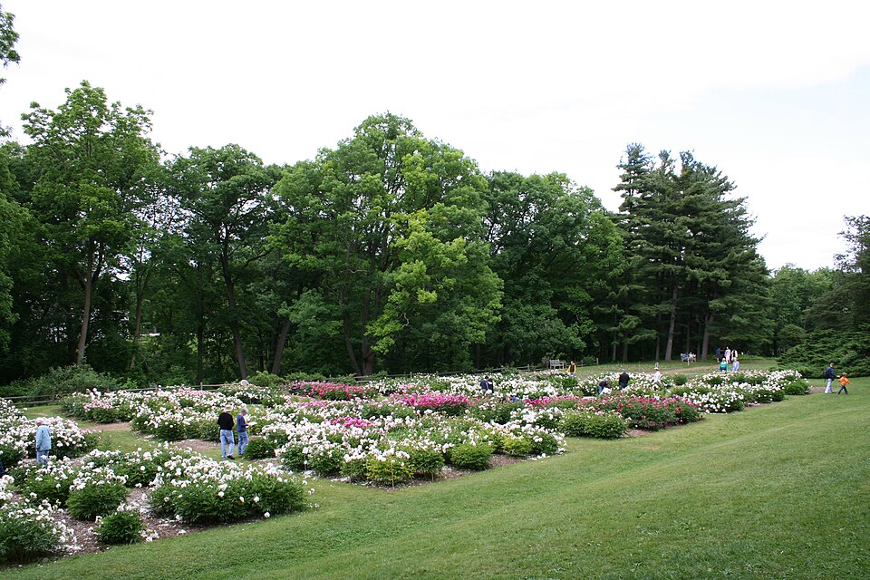
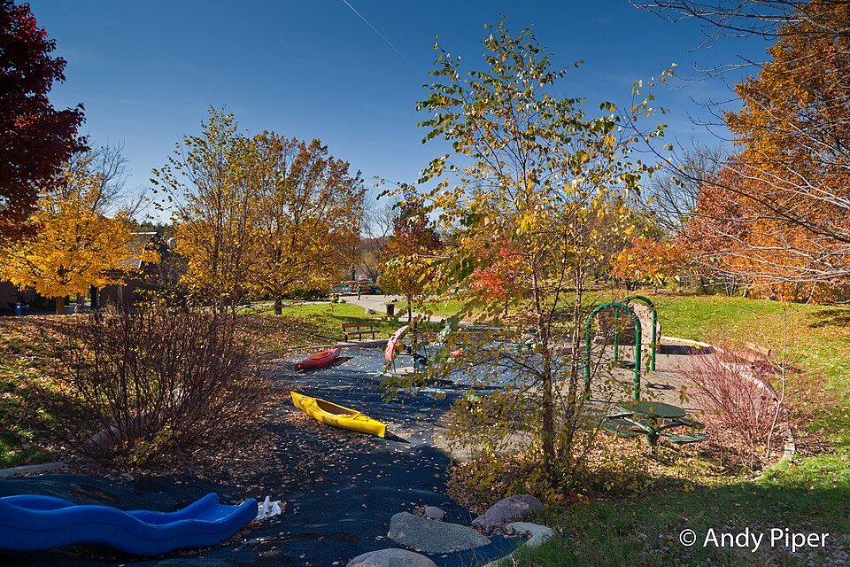
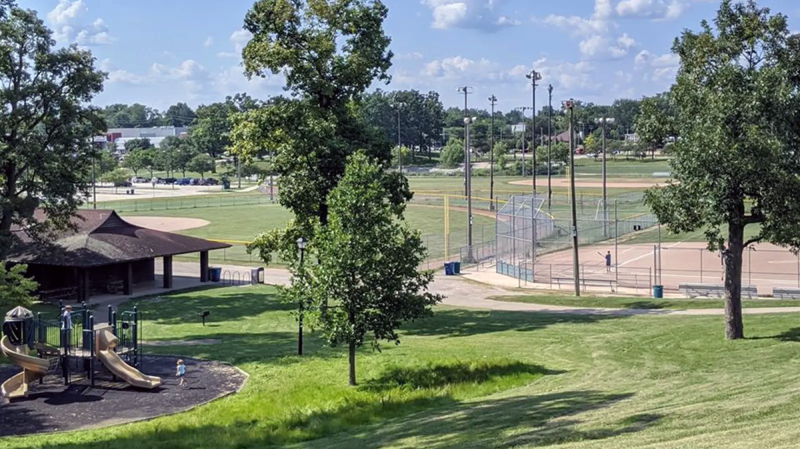
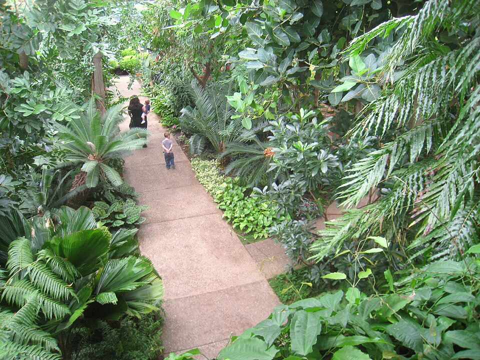

Natural area
Nichols Arboretum
Wooded trails lead visitors through hills, gardens, and views of the Huron River.
- Walking trails
- Peony garden
Discover riverfront paths, gardens, sports facilities, and natural areas.

Natural area
Wooded trails lead visitors through hills, gardens, and views of the Huron River.

Riverfront
Paths, bridges, picnic areas, and water access make this a popular riverside destination.

Recreation
Athletic and community facilities provide activities throughout the year.

Gardens
Indoor collections, display gardens, and trails introduce visitors to plants from many environments.